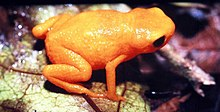

Pumpkin Toadlet
Pumpkin Toadlets are small, bright orange frogs native to the rainforests of Southeastern Brazil. Brightly colored frogs like this one are typically toxic to the touch, and this one is no exception, secreting several potent toxins! These frogs are incredibly small (about the size of a Skittle!), which makes it difficult for them to jump as gracefully as other frogs; they often end up tumbling through the air and landing on their backs or bellies!